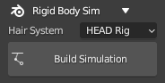
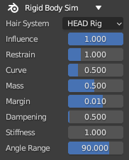
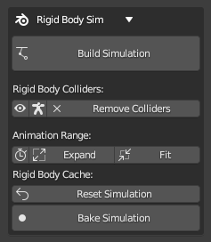
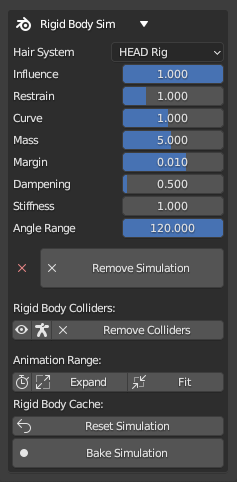
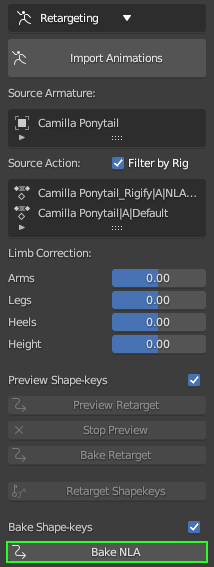

Using a spring rig (set up in the Spring Bone Rigging section) for dynamic hair simulation is made possible by use of Blender’s Rigid Body system.
The current feature set available for spring bone simulation in Blender are as follows:
Addition of spring bones to hair objects with a concise and user-friendly workflow (see the Blender Spring Bone Workflow section for details).
Automated creation of a ‘Rigify’ control rig for the character which also contains FK/IK control elements for each of the added spring bone chains.
Ability to re-target an animation onto the ‘Rigified’ character + spring rig, and perform spring bone simulation on the playing animation.
Ability to bake the simulation to an animation NLA track that can them be manipulated and fine tuned using the FK/IK controls on the spring bone chains. This means that not only can a simulation be ‘cached’ but it can also be edited.
In order to enable the spring bone simulation in Blender, you must first (at minimum) have an imported character that has had a ‘Spring Rig’ created and the hair weighted to the spring bones (see the Blender Spring Bone Workflow section for details).

The physics simulation can then be added with the ‘Build Simulation’ button (for the chosen hair system). This automatically adds a physics simulation with Rigid Body World bone constraints to the spring bone chains. The first bone in each chain will be in a fixed position.
Creation of the simulation will reveal a set of parameters for the chosen hair system.

The parameters control the behavior of the simulation.
Influence - How much of the simulation is copied into the pose bones.
Restrain - How much to restrain the overall movement of the rigid body simulation.
Curve - The dampening curve factor along the length of the spring bone chains. Less curve gives more movement near the roots.
Mass - Mass of the rigid body particles representing the bones. More mass, more inertia.
Margin - Collision margin. How far into the surface to be considered a collision.
Dampening - Spring dampening, how quickly the hair movement slows down.
Stiffness - Spring stiffness, how resistant to movement.
Angle range - Angular limit of movement.
The simulation can be removed with the ‘Remove Simulation’ button. Since the simulation will override any animation data on the spring bones, then if you have baked any simulation data to an animation (see later) then the simulation must be removed in order for the baked animation of the spring bones to play.
In cases where you are unhappy with the movement of the spring bones and wish to reposition/re-weight them, then you must take the following steps:
Remove the simulation.
# If the character has been Rigified: Remove the control-rig. (see later)
Re-bind the hair with new settings or new positioning.
# If the character has been Rigified: Re-add control rig.
Finally re-build the simulation.
# Rigify Note: please try to avoid the removal of the control rig from a rigified character, since it will introduce some instability into Blender (due to the large number of behind the scenes changes it necessitates). Instead please try to finalize the bone positioning and weighting before rigifying.
An animation can now be created with the original character skeleton (or the character can already have an animation in its original import from CC/iClone) and during playback of the animation, the spring bone simulation will be active.
More advanced capabilities are available when the Rigify control rig is used. This is discussed below.
The use of the Rigify control rig in Blender is a well established means of animating humanoid characters. The automated Rigify process and animation retargeting capabilities of the CC/iC Blender Tools are discussed in the Animation section of the documentation.
The Rigify and animation functions have been extended to include:
The ability to control character limbs by either FK (Forward Kinematics) or IK (Inverse Kinematics) have been extended to include FK/IK control elements for the spring rig.
Animations can still be retargeted to the character even when a rigified spring rig is present.
Playback of an animation will be accompanied by dynamic spring bone simulation.
Animation baking to NLA will now bake the bone movements from the dynamic spring bone simulation to the animation NLA track.
Once the simulation is baked, the physics simualtion components can be removed (since the presence of a simulation will override the contents of an animation) and the FK/IK controls used to edit the animation where necessary (or blend/override the animation with another user created NLA track).
A more complex use-case where the dynamic simulation can be blended with animation of the spring bones is also avilable.
As a point of best practice, you should only ‘Rigify’ the character when you consider it to be complete. As such, create the spring bones, position them and then weight them. Pose the bones of the added spring rigs to ensure the hair moves as you intend. When satisfied, you can rigify the model. The rigify process will automatically incorporate any spring rigs that are present amd create control elements (shown below) for FK (green) and IK (red) posing, as well as tweak bones (blue).
Rigified character with ‘spring rig’ control elements (click to enlarge)
Since Rigify allows users to change the bias between FK and IK (using the IK-FK slider - where 0 is purely IK and 1 is purely FK), a similar mechanism has been implemented to change the bias of the selected spring bones (This control is in the Item Tab - Spring Rig Properties).
The bias settings also allow for the blending of dynamic simulation with FK animation. A potential usage scenario for this would be where an initial animation of the hair bones is created then dynamic simulation is introduced over the top of it.
Basic Workflow
The Rigify requirements and process are outline in the Animation section of the documentation.
Once the Rigify process is completed, the dynamic simulation constraints can be added using the ‘Build Simulation’ button on the Rigid Body Sim foldout of the Rigging and Animation pane of the CC/iC Pipeline tab of the add-on.

Once the simulation is built then it will override any animation of the hair bones that is present (by default) This can be changed using the bias sliders in the Item Tab - Spring Rig Properties (see above).

The specific parameters of the simulation can now be controlled and the simulation safely removed via the ‘Remove Simulation’ button.
Animation Range - The range of the animation can be quickly manipulated here. Two distinct frame range functions are available:
Use Preview Range - This will activate the Viewport Preview Range. This can be set in the timeline window, for more details see the Preview Range section of the official Blender documentation.
Expand Animation Range - This tool is used to increase the scene animation frame range to the frame range of the current action on the character (it will never decrease the frame range).
Fit Animation Range - This tool will always match the scene frame range to the frame range of the current action on the character.
Physics Cache - Several tools are provided to allow quick access to the physics baking functions for Cloth Physics and Spring Physics. The frame ranges can also be reset so the physics simulations match the intended frame range of the scene you are preparing (a common cause of a physics simulation not working is that its frame range is incorrectly set).
The common features are as follows:
Reset
Cloth Physics - Resets the physics point cache on all cloth objects and synchronizes the physics point cache ranges on all cloth objects to fit the current scene animation range. i.e. If the point cache frame range does not cover the current scene range (or preview range) it will be extended to fit.
Spring Physics - Resets the physics point cache for the rigid body world and synchronizes the physics point cache range to fit the current scene animation range. i.e. If the point cache frame range does not cover the current scene range (or preview range) it will be extended to fit.
Bake - This will bake the physics simulation to Blender’s point cache.
Cloth Physics - This will bake the simulation for the currently selected cloth object.
Spring Physics - This will bake the simulation for all spring bones.
Free - This will clear the point cache.
The Reset/Bake/Free functions are also able to be performed all at once (caveat emptor) in the ‘All dynamics’ section. The most useful function here is ‘Free All Dynamics’ which will clear the point cache for all cloth and spring objects at the same time.
For further details of Blender’s cache system, please see these developer notes on the Point Cache.
The baking system can be used to properly simulate layers of clothing.
This example uses the Cloth Physics Tools in the CC/iC Create tab: If you are using several layers of clothing the following procedure will be of use.
Select the innermost layer of clothing (e.g. a skirt or a dress) and Add Cloth Physics to it (with the button of the same name).
Select the character’s body and Add Cloth Collision to it (named button). This will allow the simulated cloth to collide with the character body.
Select the innermost clothing object and ‘Bake the Simulation’.
Now we can simulate the next layer of clothing. Select the object of the next layer of clothing (e.g. a long coat or shawl) and Add Cloth Physics to it.
We can now use the baked simulation of the innermost layer as a collision object. Thus we can Add Cloth Collision to the innermost object (used in step 1.). This will allow the simulation of the outer object to collide properly with the inner object without making a terrible mess of the inner object’s simulation (since it is now baked in).
Select the outer clothing object and ‘Bake the Simulation’.
The outer object can be used as a collision object for the hair simulation. Again, this is done with the Add Cloth Collision button for the outer object.
Finally, the Spring Bone Hair simulation can now be baked (in the CC/iC Pipeline Tab - Scene Tools)
This builds up layers of simulation that aren’t allowed to interfere with each other (since that often causes huge problems with Blender physics simulation). Below is an example render of this multi layered baking approach.
Since the dynamic spring bone simulation is used to deform a single chain or several chains of bones, then there is an opportunity to write the simulated bone movements into a keyframed animation track.
In order to convert the simulation into a keyframed animation, follow these steps (this assumes you have already created a suitable spring rig):
The character + spring rig must first be ‘Rigified’ (details for this are found in the Animation section of the documentation).
The spring bone simulation will respond to any motion from playback of the retargeted/created animation. It will also respond to external influences such as force fields.
In the ‘Retargeting’ section of the Rigging and Animation Pane of the CC/iC Pipeline tab the ‘NLA Bake’ function will bake both the current action on the character and the dynamically generated movement of the spring rig to a new NLA track.

Once the animation is baked, the dynamic simulation should be removed (with the ‘Remove Simulation’ button in the Rigid Body Sim foldout - contained in either tab).
The animation data can be viewed as a NLA track or via the Action Editor.
The motion of the spring bones is now a ‘normal’ keyframed animation and it can be edited as needed using either the FK or IK control rig elements (as discussed above).
This provides a means of ‘caching’ the simulation in a form that can be directly edited or blended with other animation data.
{kind=link}

 - This will activate the Viewport Preview Range. This can be set in the timeline window, for more details see the Preview Range section of the official Blender documentation.
- This will activate the Viewport Preview Range. This can be set in the timeline window, for more details see the Preview Range section of the official Blender documentation. - This tool is used to increase the scene animation frame range to the frame range of the current action on the character (it will never decrease the frame range).
- This tool is used to increase the scene animation frame range to the frame range of the current action on the character (it will never decrease the frame range). - This tool will always match the scene frame range to the frame range of the current action on the character.
- This tool will always match the scene frame range to the frame range of the current action on the character.
 - This will bake the physics simulation to Blender’s point cache.
- This will bake the physics simulation to Blender’s point cache. - This will clear the point cache.
- This will clear the point cache.{kind=link}
{kind=link}